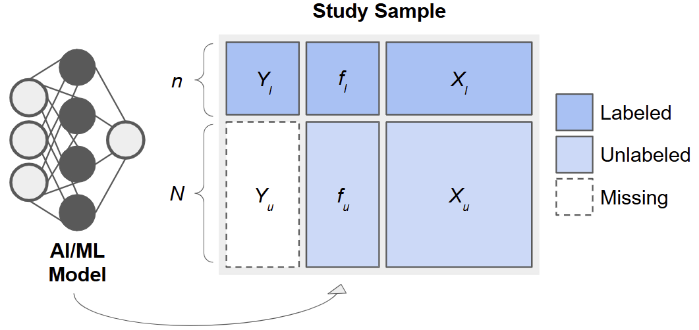
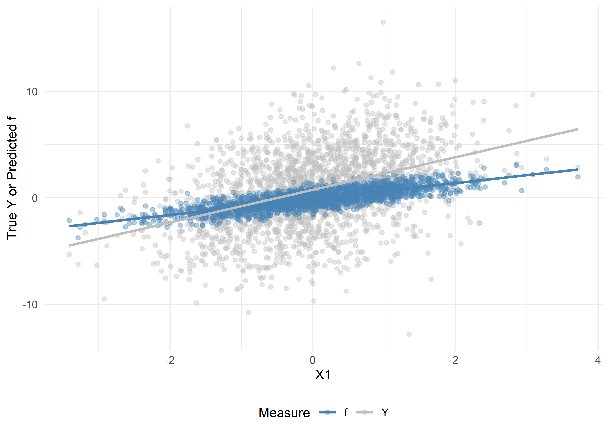
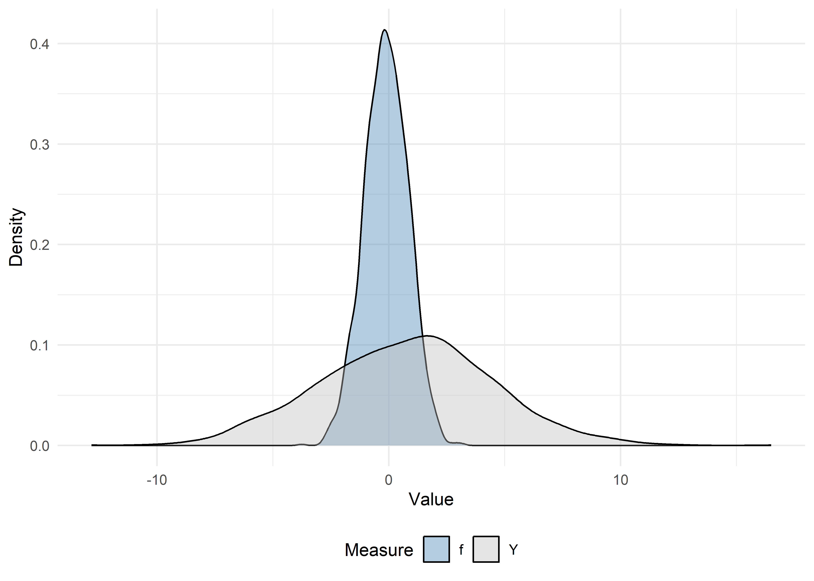
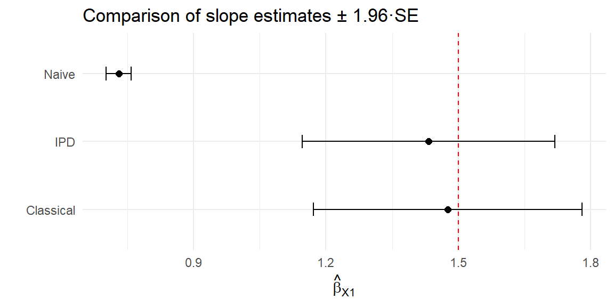

Code
# Install these packages if you have not already:
# install.packages(c("ipd", "broom", "tidyverse", "patchwork"))
library(ipd)
library(broom)
library(tidyverse)
library(patchwork)Inference with Predicted Data
Build intuition for inference with predicted data by simulating labeled/unlabeled sets and comparing naive, classical, and IPD estimators.
Welcome to this workshop on Inference with Predicted Data (IPD)! In this module, we will:
ipd package and its main functions.tidy, glance, and augment methods.Throughout the workshop, exercises are provided with solutions for practice.
Unit 00 intentionally uses synthetic examples. The goal is to make the IPD workflow concrete before moving to real data in later modules.
Using predicted outcomes for can improve efficiency, but treating them as if they are real data can bias downstream inference. This unit shows how IPD methods can use a small set of labeled data to recover valid inference while leveraging unlabeled data and predicted outcomes to gain more information.
When an outcome, \(Y\), is costly or difficult to measure, it can be tempting to replace missing values with predictions, \(f(\boldsymbol{X})\), from a machine learning model (e.g., a random forest or neural network) built on easier-to-measure features, \(\boldsymbol{X}\). However, using \(f\) as if it were the true outcome in downstream analyses, e.g., in estimating a regression coefficient, \(\beta\), for the association between \(Y\) and \(\boldsymbol{X}\), leads to biased point estimates and underestimated uncertainty. Methods for Inference with Predicted Data (IPD) address this by leveraging a small subset of “labeled” data with true \(Y\) values to calibrate inference in a larger “unlabeled” dataset.
Consider data arising from three sets of observations:
After fitting \(f\) on the training set, we apply it to the labeled and unlabeled sets to obtain predictions \(f_i = f(X_i)\):

Especially for ‘good’ predictions, it is tempting to treat \(f_i\) as surrogate outcomes and use them to estimate quantities such as regression parameters, \(\beta\). However, as we will see, this leads to invalid inference. By combining the predicted \(f_i\) with the observed \(Y_i\) in the labeled set, we can calibrate our estimates and standard errors to achieve valid inference.
Consider a simple linear regression model for the association between \(Y\) and \(X\). We discuss the following potential estimators, which we will later implement using simulated data.
Using only the unlabeled predictions, the naive OLS estimator solves
\[ \hat\gamma_{\text{naive}} = \arg\min_\gamma \sum_{i\in U} (f_i - X_i'\gamma)^2. \]
We are careful to write the coefficients for this model as \(\gamma\), because they bear no necessary correspondence with \(\beta\), except under the extremely restrictive scenario when \(f\) perfectly captures the true regression function.
Instead, a valid approach would be to use only the labeled data. This classical estimator solves
\[ \hat\beta_{\text{classical}} = \arg\min_\beta \sum_{i\in L} (Y_i - X_i'\beta)^2. \] While this approach is valid, it has limited precision because \(n_l\) is small in practice and we do not utilize any potential information from the (often much larger) unlabeled data.
Many estimators tailored to inference with predicted data share a similar form, as given in Ji et al. (2025):
\[ \widehat\beta_\text{ipd} = \arg\min_\beta \frac{1}{n_l}\sum_{i=1}^{n_l} \ell(X_i, Y_i) - \left[\frac{1}{n_l}\sum_{i=1}^{n_l} g(X_i, f_i) - \frac{1}{n_l+n_u}\sum_{i=n_l+1}^{n_l+n_u} g(X_i, f_i)\right], \]
for some loss function, \(\ell(\cdot)\), such as the squared error loss for linear regression, and some \(g(\cdot)\), which they call the ‘imputed loss’. Here, the first term is exactly the classical estimator, which anchors these methods on a valid model, and the second term in the square brackets ‘augments’ the estimator with additional information from the predictions. This allows us to have an estimator that is provably unbiased and asymptotically at least as efficient as the classical estimator, which only uses a fraction of the data.
The Inference with Predicted Data (IPD) package implements several recent methods for IPD, such as Chen & Chen method of Gronsbell et al., the Prediction-Powered Inference (PPI) and PPI++ methods of Angelopoulos et al. (a) and Angelopoulos et al. (a), the Post-Prediction Inference (PostPI) method of Wang et al., and the Post-Prediction Adaptive Inference (PSPA) method of Miao et al. to conduct valid, efficient inference, even when a large proportion of outcomes are predicted.
In this first tutorial, we demonstrate how to:
ipd::simdat().ipd::ipd() to estimate the association, \(\beta\), between \(Y\) and \(X\) using labeled and unlabeled data.First, insure you have the ipd package and some additional packages installed:
# Install these packages if you have not already:
# install.packages(c("ipd", "broom", "tidyverse", "patchwork"))
library(ipd)
library(broom)
library(tidyverse)
library(patchwork)Throughout the workshop, we will use reproducible seeds and tidyverse conventions.
Below is a high-level summary of the core ipd functions.
simdat()Generates synthetic datasets for various inferential models.
simdat(
n, # Numeric vector of length 3: c(n_train, n_labeled, n_unlabeled)
effect, # Numeric: true effect size for simulation
sigma_Y, # Numeric: residual standard deviation
model, # Character: one of "mean", "quantile", "ols", "logistic", "poisson"
... # Additional arguments
)This function returns a data.frame with columns:
X1, X2, ...: covariatesY: true outcome (for training, labeled, and unlabeled subsets)f: predictions from the model (for labeled and unlabeled subsets)set_label: character indicating “training”, “labeled”, or “unlabeled”.ipd()Fits IPD methods for downstream inference on predicted data.
ipd(
formula, # A formula: e.g., Y - f ~ X1 + X2 + ...
method, # Character: one of "chen", "postpi_boot", "postpi_analytic",
# "ppi", "ppi_all", "ppi_plusplus", "pspa"
model, # Character: one of "mean", "quantile", "ols", "logistic",
# "poisson"
data, # Data frame containing columns for formula and label
label, # Character: name of the column with set labels ("labeled" and
# "unlabeled")
... # Additional arguments
)print() and summary(): display model summaries.tidy(): return a tibble of estimates and standard errors.glance(): return a one-row tibble of model-level metrics.augment(): return the original data with fitted values and residuals.The ipd::simdat() function makes it easy to generate:
We supply the sample sizes, n = c(n_train, n_label, n_unlabel), an effect size (effect), residual standard deviation (sigma_Y; i.e., how much random noise is in the data), and a model type ("ols", "logistic", etc.). In this tutorial, we focus on a continuous outcome generated from a linear regression model ("ols"). We can also optionally shift and scale the predictions (via the shift and scale arguments) to control how the predicted outcomes relate to their true underlying counterparts.
Let us generate a synthetic dataset for a linear model with:
set.seed(123)
# n_t = 5000, n_l = 500, n_u = 1500
n <- c(5000, 500, 1500)
# Effect size = 1.5, noise sd = 3, model = "ols" (ordinary least squares)
# We also shift the mean of the predictions by 1 and scale their values by 2
dat <- simdat(
n = n,
effect = 1.5,
sigma_Y = 3,
model = "ols",
shift = 1,
scale = 2
)# The resulting data.frame `dat` has columns:
# - X1, X2, X3, X4: Four simulated covariates (all numeric ~ N(0,1))
# - Y : True outcome (available in unlabeled set for simulation)
# - f : Predicted outcome (Generated internally in simdat)
# - set_label : {"training", "labeled", "unlabeled"}
# Quick look:
dat |>
group_by(set_label) |>
summarize(n = n()) # A tibble: 3 × 2
set_label n
<chr> <int>
1 labeled 500
2 training 5000
3 unlabeled 1500Let us also inspect the first few rows of each subset:
# Training set
dat |>
filter(set_label == "training") |>
glimpse()Rows: 5,000
Columns: 7
$ X1 <dbl> -0.56047565, -0.23017749, 1.55870831, 0.07050839, 0.12928774…
$ X2 <dbl> -1.61803670, 0.37918115, 1.90225048, 0.60187427, 1.73234970,…
$ X3 <dbl> -0.91006117, 0.28066267, -1.03567040, 0.27304874, 0.53779815…
$ X4 <dbl> -1.119992047, -1.015819127, 1.258052722, -1.001231731, -0.40…
$ Y <dbl> 3.8625325, -1.6575634, 4.1872914, -3.3624963, 6.9978916, 1.5…
$ f <dbl> NA, NA, NA, NA, NA, NA, NA, NA, NA, NA, NA, NA, NA, NA, NA, …
$ set_label <chr> "training", "training", "training", "training", "training", …# Labeled set
dat |>
filter(set_label == "labeled") |>
glimpse()Rows: 500
Columns: 7
$ X1 <dbl> -0.4941739, 1.1275935, -1.1469495, 1.4810186, 0.9161912, 0.3…
$ X2 <dbl> -0.15062996, 0.80094056, -1.18671785, 0.43063636, 0.21674709…
$ X3 <dbl> 2.0279109, -1.4947497, -1.5729492, -0.3002123, -0.7643735, -…
$ X4 <dbl> 0.53495620, 0.36182362, -1.89096604, -1.40631763, -0.4019282…
$ Y <dbl> 2.71822922, 1.72133689, 0.86081066, 3.77173123, -2.77191549,…
$ f <dbl> 0.67556303, -0.13706321, -1.75579589, 0.84146158, 0.15512973…
$ set_label <chr> "labeled", "labeled", "labeled", "labeled", "labeled", "labe…# Unlabeled set
dat |>
filter(set_label == "unlabeled") |>
glimpse()Rows: 1,500
Columns: 7
$ X1 <dbl> -1.35723063, -1.29269781, -1.51720731, 0.85917603, -1.214617…
$ X2 <dbl> 0.01014789, 1.56213812, 0.41284605, -1.18886219, 0.71454993,…
$ X3 <dbl> -1.42521509, 1.73298966, 1.66085181, -0.85343610, 0.26905593…
$ X4 <dbl> -1.1645365, -0.2522693, -1.3945975, 0.3959429, 0.5980741, 1.…
$ Y <dbl> -3.8296223, -3.0350282, -5.3736718, 2.6076634, -4.7813463, -…
$ f <dbl> -1.9014253, -0.1679210, -0.3030749, 0.1249168, -0.8998546, -…
$ set_label <chr> "unlabeled", "unlabeled", "unlabeled", "unlabeled", "unlabel…set_label == "training" form an internal training set. Here, Y is observed, but f is NA, as we learn the prediction rule in this set.set_label == "labeled" also have both Y and f. In practice, f will be generated by your own prediction model; for simulation, simdat does so automatically.set_label == "unlabeled" have Y for posterity (but in a real‐data scenario, you would not know Y); simdat still generates Y, but the IPD routines will not use these. The column f always contains ‘predicted’ values.In practice, we would take the training portion and fit an AI/ML model to predict \(Y\) from \((X_1, X_2, X_3, X_4)\). This is done automatically by the simdat function, but we will do this for demonstration.
Let us fit a linear prediction model on the training data:
# 1) Subset training set
dat_train <- dat |>
filter(set_label == "training")
# 2) Fit a linear model: Y ~ X1 + X2 + X3 + X4
lm_pred <- lm(Y ~ X1 + X2 + X3 + X4, data = dat_train)
# 3) Prepare a full-length vector of NA
dat$f_pred <- NA_real_
# 4) Identify the rows to predict (all non–training rows)
idx_analytic <- dat$set_label != "training"
# 5) Generate predictions just once on that subset (shifted and scaled to match)
pred_vals <- (predict(lm_pred, newdata = dat[idx_analytic, ]) - 1) / 2
# 6) Insert them back into the full data frame
dat$f_pred[idx_analytic] <- pred_vals
# 7) Verify: `f_pred` is equal to `f` for the labeled and unlabeled data
dat |>
select(set_label, Y, f, f_pred) |>
filter(set_label != "training") |>
glimpse()Rows: 2,000
Columns: 4
$ set_label <chr> "labeled", "labeled", "labeled", "labeled", "labeled", "labe…
$ Y <dbl> 2.71822922, 1.72133689, 0.86081066, 3.77173123, -2.77191549,…
$ f <dbl> 0.67556303, -0.13706321, -1.75579589, 0.84146158, 0.15512973…
$ f_pred <dbl> 0.67556303, -0.13706321, -1.75579589, 0.84146158, 0.15512973…lm(Y ~ X1 + X2 + X3 + X4, data = dat_train) fits an ordinary least squares (OLS) regression on the training subset.predict(lm_pred, newdata = .) generates a new f (stored as f_pred) for each row outside of the training set.ranger::ranger()), gradients (xgboost::xgboost()), or any other ML algorithm; the IPD methods only require that you supply a vector of predictions, f, in your data.We now split the data into two subsets:
Y (to be used for final inference alongside their predictions).Y (we pretend we do not observe them; ipd will still require the f + covariates).dat_ipd <- dat |>
filter(set_label != "training") |>
# Keep only the columns needed for downstream IPD
select(set_label, Y, f, X1, X2, X3, X4)
# Show counts:
dat_ipd |>
group_by(set_label) |>
summarize(n = n())# A tibble: 2 × 2
set_label n
<chr> <int>
1 labeled 500
2 unlabeled 1500dat_ipd has two groups:labeled (500 rows where we observe both Y and f),unlabeled (1500 rows where we only ‘observe’ f).Before modeling, it is helpful to see graphically how the predicted values, \(f\), compare to the true outcomes, \(Y\).
We can visually assess the bias and variance of our predicted outcomes, \(f\), versus the true outcomes, \(Y\), in our analytic data by plotting:
# Prepare data
dat_visualize <- dat_ipd |>
select(X1, Y, f) |>
pivot_longer(Y:f, names_to = "Measure", values_to = "Value") |>
arrange(Measure)
# Scatter + trend lines
ggplot(dat_visualize, aes(x = X1, y = Value, color = Measure)) +
theme_minimal() +
geom_point(alpha = 0.4) +
geom_smooth(method = "lm", se = FALSE) +
scale_color_manual(values = c("steelblue", "gray")) +
labs(
x = "X1",
y = "True Y or Predicted f",
color = "Measure"
) +
theme(legend.position = "bottom") 
# Density plots
ggplot(dat_visualize, aes(x = Value, fill = Measure)) +
theme_minimal() +
geom_density(alpha = 0.4) +
scale_fill_manual(values = c("steelblue", "gray")) +
labs(
x = "Value",
y = "Density",
fill = "Measure"
) +
theme(legend.position = "bottom")
Before applying IPD, let’s see what happens if we:
f on X1 (the naive approach).Y on X1 (the classical approach).We will compare these to IPD‐corrected estimates.
Using the labeled and unlabeled sets, fit two models:
lm() with f ~ X1.lm() with Y ~ X1.# 1) Naive: treat f as if it were truth (only on unlabeled)
naive_model <- lm(f ~ X1, data = filter(dat_ipd, set_label == "unlabeled"))
# 2) Classical: regress true Y on X1, only on the labeled set
classical_model <- lm(Y ~ X1, data = filter(dat_ipd, set_label == "labeled"))Let’s also extract the coefficient summaries using the tidy method and compare the results of the two approaches:
naive_df <- tidy(naive_model) |>
mutate(method = "Naive") |>
filter(term == "X1") |>
select(method, estimate, std.error)
classical_df <- tidy(classical_model) |>
mutate(method = "Classical") |>
filter(term == "X1") |>
select(method, estimate, std.error)
bind_rows(naive_df, classical_df)# A tibble: 2 × 3
method estimate std.error
<chr> <dbl> <dbl>
1 Naive 0.730 0.0145
2 Classical 1.48 0.155 ipd::ipd()The single wrapper function ipd() implements multiple IPD methods (e.g., Chen & Chen, PostPI, PPI, PPI++, PSPA) for various inferential tasks (e.g., mean and quantile estimation, ols, logistic, and poisson regression).
Basic usage of ipd():
ipd(
formula = Y - f ~ X1, # The downstream inferential model
method = "pspa" # The IPD method to run
model = "ols" # The type of inferential model
data = dat_ipd, # A data.frame with columns:
# - set_label: {"labeled", "unlabeled"}
# - Y: true outcomes (for labeled data)
# - f: predicted outcomes
# - X covariates (here X1, X2, X3, X4)
label = "set_label", # Column name indicating "labeled"/"unlabeled"
)Let’s run one method, pspa, proposed by Miao et al., 2024. The PSPA estimator is an IPD method that combines information from:
Rather than treating the predicted outcomes with the same importance as the true outcomes, the method estimates a data-driven weight, \(\hat{\omega}\), and applies it to the predicted outcome contributions:
\[ \hat{\beta}_\text{pspa} = \hat{\beta}_\text{classical} - \hat{\omega}\cdot (\hat{\gamma}_\text{naive}^l - \hat{\gamma}_\text{naive}^u), \]
where \(\hat{\beta}_{\rm classical}\) is the estimate from the classical regression, \(\hat{\gamma}_{\rm naive}^l\) is the estimate from the naive regression in the labeled data, \(\hat{\gamma}_{\rm naive}^u\) is the estimate from the naive regression in the unlabeled data, and \(\hat{\omega}\) reflects the amount of additional information carried by the predictions. By adaptively weighting the unlabeled information, the PSPA estimator achieves greater precision than by using the labeled data alone, without sacrificing validity, even when the predictions are imperfect.
Let’s call the method using the ipd() function and collect the estimate for the slope of X1 in a linear regression (model = "ols"):
set.seed(123)
ipd_model <- ipd(
formula = Y - f ~ X1,
data = dat_ipd,
label = "set_label",
method = "pspa",
model = "ols"
)
ipd_modelIPD inference summary
Method: pspa
Model: ols
Formula: Y - f ~ X1
Coefficients:
Estimate Std. Error z value Pr(>|z|)
(Intercept) 0.88014 0.14702 5.9865 2.143e-09 ***
X1 1.43248 0.14628 9.7929 < 2.2e-16 ***
---
Signif. codes: 0 '***' 0.001 '**' 0.01 '*' 0.05 '.' 0.1 ' ' 1The ipd_model is an S4 object with slots for things like the coefficient, se, ci, coefTable, fit, formula, data_l, data_u, method, model, and intercept. We can extract the coefficient table using ipd’s tidy helper and compare with the naive and classical methods:
# Extract the coefficient estimates
ipd_df <- tidy(ipd_model) |>
mutate(method = "IPD") |>
filter(term == "X1") |>
select(method, estimate, std.error)
# Combine with naive & classical:
compare_tab <- bind_rows(naive_df, classical_df, ipd_df)
compare_tab# A tibble: 3 × 3
method estimate std.error
<chr> <dbl> <dbl>
1 Naive 0.730 0.0145
2 Classical 1.48 0.155
3 IPD 1.43 0.146 Let’s plot the coefficient estimates and 95% CIs for each of the naive, classical, and IPD methods:
# Forest plot of estimates and 95% confidence intervals
compare_tab |>
mutate(
lower = estimate - 1.96 * std.error,
upper = estimate + 1.96 * std.error
) |>
ggplot(aes(x = estimate, y = method)) +
geom_point(size = 2) +
geom_errorbarh(aes(xmin = lower, xmax = upper), height = 0.2) +
geom_vline(xintercept = 1.5, linetype = "dashed", color = "red") +
labs(
title = "Comparison of slope estimates \u00B1 1.96·SE",
x = expression(hat(beta)[X1]),
y = ""
) +
theme_minimal()
Use tidy(), glance(), and augment() on ipd_model. Compare the coefficient estimate and standard error for X1 with the naive fit.
tidy(ipd_model)# A tibble: 2 × 5
term estimate std.error conf.low conf.high
<chr> <dbl> <dbl> <dbl> <dbl>
1 (Intercept) 0.880 0.147 0.592 1.17
2 X1 1.43 0.146 1.15 1.72glance(ipd_model)# A tibble: 1 × 6
method model intercept nobs_labeled nobs_unlabeled call
<chr> <chr> <lgl> <int> <int> <chr>
1 pspa ols TRUE 500 1500 Y - f ~ X1augment(ipd_model) |> glimpse()Rows: 1,500
Columns: 9
$ set_label <chr> "unlabeled", "unlabeled", "unlabeled", "unlabeled", "unlabel…
$ Y <dbl> -3.8296223, -3.0350282, -5.3736718, 2.6076634, -4.7813463, -…
$ f <dbl> -1.9014253, -0.1679210, -0.3030749, 0.1249168, -0.8998546, -…
$ X1 <dbl> -1.35723063, -1.29269781, -1.51720731, 0.85917603, -1.214617…
$ X2 <dbl> 0.01014789, 1.56213812, 0.41284605, -1.18886219, 0.71454993,…
$ X3 <dbl> -1.42521509, 1.73298966, 1.66085181, -0.85343610, 0.26905593…
$ X4 <dbl> -1.1645365, -0.2522693, -1.3945975, 0.3959429, 0.5980741, 1.…
$ .fitted <dbl> -1.0640638, -0.9716221, -1.2932266, 2.1108854, -0.8597740, 1…
$ .resid <dbl> -2.7655584, -2.0634061, -4.0804452, 0.4967781, -3.9215723, -…# Compare with naive
broom::tidy(naive_model)# A tibble: 2 × 5
term estimate std.error statistic p.value
<chr> <dbl> <dbl> <dbl> <dbl>
1 (Intercept) -0.118 0.0146 -8.07 1.40e-15
2 X1 0.730 0.0145 50.3 0 "ppi_plusplus"). How do the results compare?model = "logistic" in both simdat() and ipd().Happy coding! Feel free to modify and extend these exercises for your own data.
This is the end of the module. We hope this was informative! For question/concerns/suggestions, please reach out to ssalerno@fredhutch.org